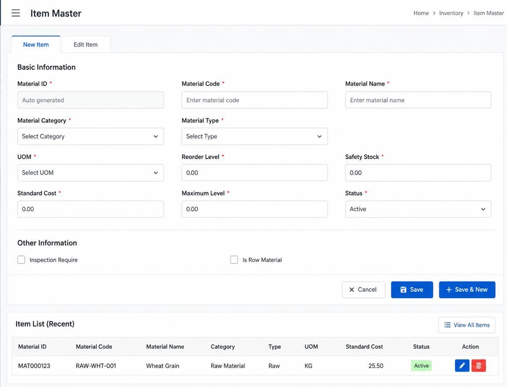
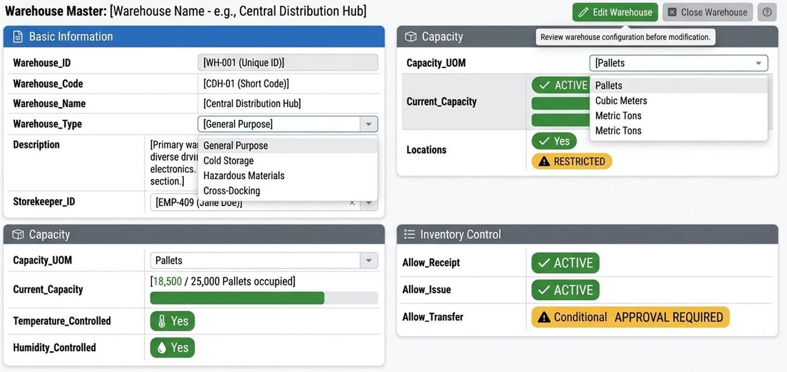
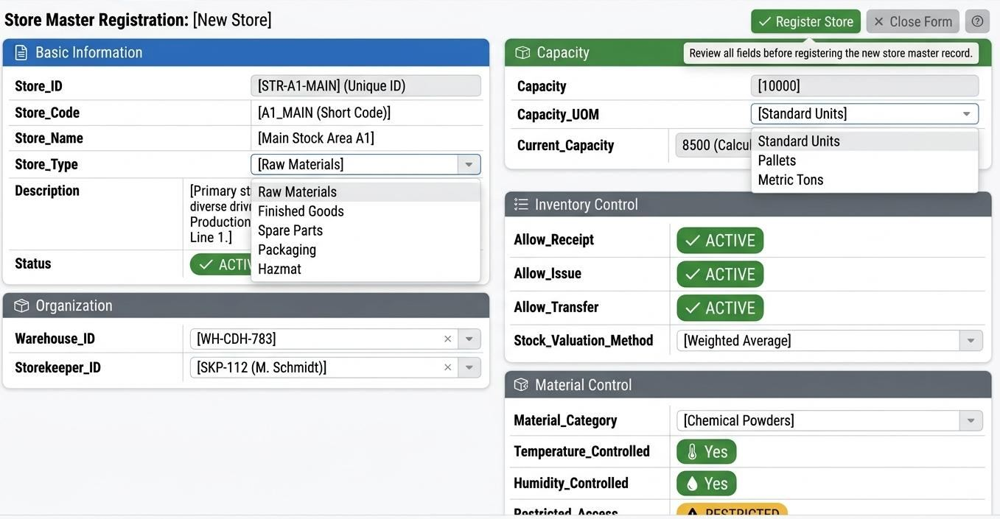
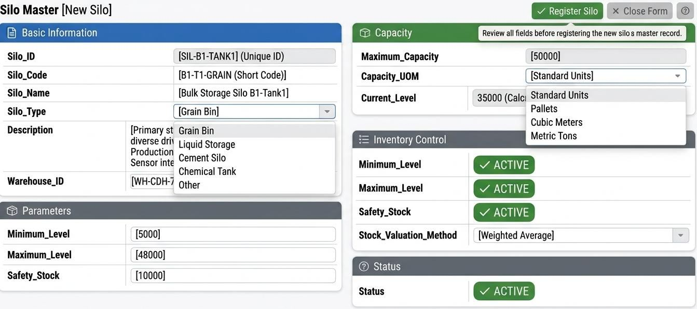
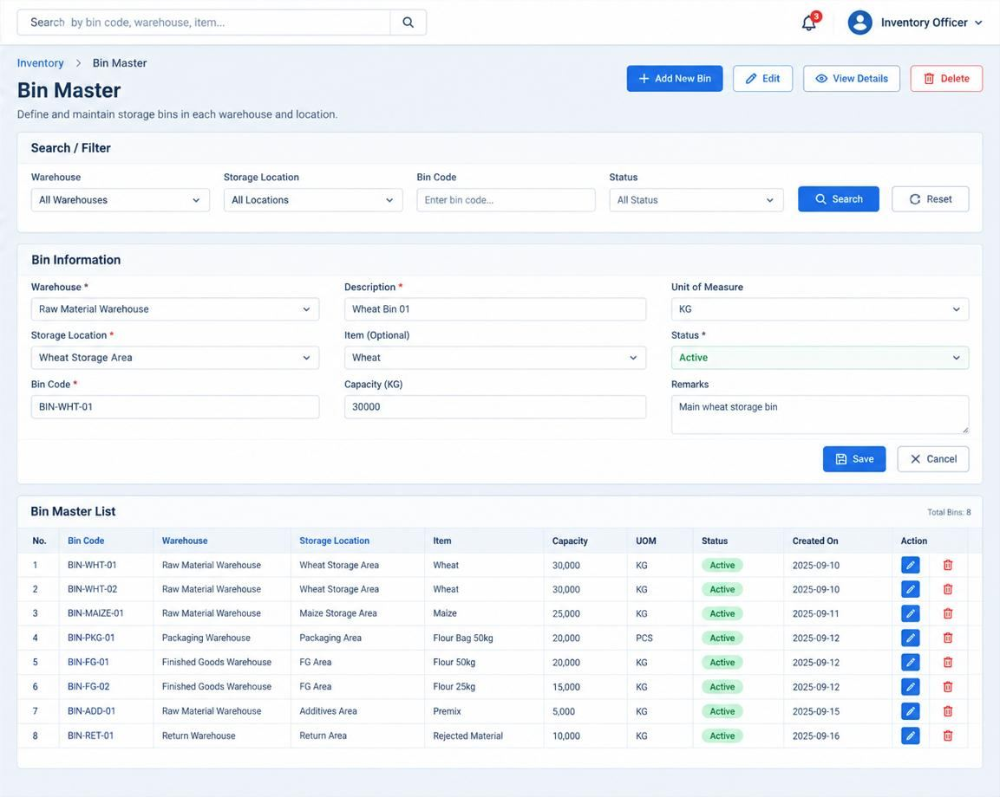

| Meeting | Saturday 3 October 2026, 1 o'clock at night local time (7 PM) |
| Documents discussed | 1. "Raw Material Procurement-to-Payment Process v2": the process and 28 screen images, received 1 October 2. "Raw Material Procurement-to-Payment Database Objects": the data dictionary (32 tables), received 1 October If there is time: "Flour Manufacturing ERP System", the architecture proposal, received 2 October |
| Purpose | Agree on how these documents become the system, and settle the questions only your team can answer |
| Length | About 90 minutes |
| A printable view | DISCUSSION-PACK.html in this folder; it opens in any browser |
Agenda
| # | Topic | Time | What we want at the end |
|---|---|---|---|
| 1 | What we understood: your process in one picture | 5 min | Agreement that the flow is right |
| 2 | The screens, one by one | 30 min | The good ideas confirmed; the open points noted |
| 3 | The data dictionary | 15 min | Agreement on how we use it |
| 4 | The four decisions that change the size of the work | 20 min | An answer, or an owner and a date for each |
| 5 | Other questions | 15 min | Answers, or owners and dates |
| 6 | Next steps | 5 min | Who sends what, and by when |
1. What we understood
Your process and ours are the same process. Almost every step you drew already exists in our plan:
- Purchase request
- approval
- purchase order
- truck arrives
- quality inspection
- goods received note
- stock
- supplier invoice
- payment request
- approval
- payment
| Your documents | How they fit our plan | |
|---|---|---|
| Screens | 28 screen images on pages 2–25 | Almost every screen matches a requirement we already have. Three add something new, and we will add them: supplier delivery entry, bin card, stock card. One we suggest holding back for now: the supplier raising their own payment request |
| Tables | 32 tables | 30 match tables we already have. The other two (the supplier delivery and its lines) are new, and we will add them. We also add about 24 fields and status values that you have and we did not, such as remarks on every document, store type, bin type and the supplier's own item code |
| Good ideas we are adopting | "Checked by" on inspections; a count review that can send a count back; attachment slots by document type (invoice, tax document, delivery note, withholding certificate), each with a "verify" tick; the approver's queue; one payment for several invoices; a required deposit slip; an "I agree" confirmation for the person submitting and for the approver |
Which release? Some of these additions come in the first release; others come in the follow-up release shortly after go-live. The plan we send after this meeting marks which is which, and your answers today help decide.
In short: we take what you want captured, every field and every step. How it is stored is our design, because it adds the links and locks that stop double payment and wrong stock (section 3).
A note on the example numbers. Many screens use sample numbers that don't add up, or that disagree from one screen to the next. That is normal for screen designs, so we take the fields and the flow from them, not the numbers. For testing at the end, we would like one realistic example that runs through every screen: one supplier, one truck, one invoice, one payment (question Q-13).
2. The screens, one by one
Each group shows what we saw, what we will build, and any question. "Q-" numbers point to the question list in sections 4 and 5.
2.1 Sign-in (page 2)
- We keep: username and password, plus the "SSO Login" button.
- One change: the operation unit is chosen right after sign-in, not on the sign-in page. A public sign-in page should not list the company's plants or branches.
- Question: what exactly is an operation unit: a branch, a plant, or a department? (Q-08)
2.2 Supplier registration (pages 3–4)
- We keep: the four steps: basic information, contacts, address, bank and finance details.
- We add from your data dictionary: a "primary account" flag on the supplier's bank account (
is_primary), and an active/inactive flag on each contact. - We change:
- The status is set by actions, not picked from a list. A supplier becomes "Active" only when someone approves them. This applies to every document: none of our screens will have a status dropdown, because a dropdown lets anyone skip the approval.
- The registration date is filled in by the system, not typed.
- A change to a supplier's bank account needs a second person's approval. Changed bank details are one of the most common ways companies lose money to fraud.
- Question: the screen is titled "Supplier Portal". Will suppliers register themselves, or does your team register them? (Q-03)
2.3 Purchase request and purchase order (pages 5–6)
- We keep: both forms and both approval dashboards with their counts and queues.
- We add: a "purpose" list on the request (production, maintenance, testing, office use…), and a budget code if you use one (Q-16).
- We change:
- "Urgent" stays a priority and is removed from the status list.
- The PO line total is calculated, never typed (one sample line shows 200 × 4.50 = 990.00).
- A purchase order is created from an approved request and keeps the link line by line. That link is what lets the system show "ordered 25 t, received 20 t, invoiced 20 t, still open 5 t".
- Question: the request and order are in US dollars, while invoices and payments are in birr. Do you buy in foreign currency? (Q-09)
2.4 Supplier delivery (page 7) — new, and we add it
- We keep: the arrival record: supplier, purchase order, delivery note, plate, driver, date and quantities.
- We change:
- The supplier and the items come from the purchase order, so a delivery can't be recorded against the wrong supplier. An item that is not on the order needs an order change first.
- Totals are kept per unit: tonnes and kilograms are never added into one number.
- We would keep the grade out of the item name ("Wheat Grain (Grade 1)"). The grade comes from the inspection, so one wheat item can arrive in any grade.
- Question: who records the delivery (stores, purchasing or the gate guard), and what does "Approve" on this screen mean? (Q-10)
2.5 Quality inspection (page 8)
- We keep: the parameters with their limits and results; "Analysed by" plus "Checked by".
- We change:
- If the result is Rejected, "Accept and receive" is not available. A rejected delivery can only be accepted through a recorded exception (a "concession") by an authorised person.
- Hectolitre weight (the weight of 100 litres of grain, a standard wheat quality measure) is in kg/hl; the screen shows kg/l.
- We noticed: only the wheat is inspected on page 8. The soya bean, bran and maize on the same delivery are received without inspection (Q-22).
- Question: this is the biggest change from your first draft. The first draft had a grade and a score (92.4/100); this version only has pass or fail, and a failed result rejects the delivered wheat (in the example, 2 of 9 parameters failed). Which is right, and do grades affect the price? (Q-02)
2.6 Goods received note (page 9)
- We keep: the GRN prepared from the delivery and the inspection, which the storekeeper then confirms.
- We change:
- A rejected delivery cannot be received. In the example the wheat rejected at inspection (page 8) is fully accepted on page 9: 500 MT accepted, 0 rejected.
- "Rejected" and "short" are two different quantities. Rejected means it arrived and was refused: it goes back on the truck or is held aside. Short means it never arrived: it is not stock and is not paid. Your data dictionary already keeps them apart (ordered, delivered, accepted and rejected), but the screen combines them in one column (Q-11).
- The storage place (bin, store or silo) is chosen per line. Five materials can't all go into one bin.
- The number of bags and the weight are converted using the item's kg-per-bag, not typed separately.
- Recording a delivery, inspecting it and receiving it are done by different people. In the examples one person records the delivery (page 7), inspects it (page 8) and receives it (page 9). If one person did all three, nobody would check their work (Q-23).
- Question: how is the quantity you pay for decided: the weighbridge, the bag count, or the delivery note? There are no weighbridge weights (gross, tare, net) on any v2 screen (Q-01).
2.7 Bin card and stock card (pages 10–11) — new, and we add both
- We keep: both layouts: a bin card for one item in one storage place, and a stock card for one item in one warehouse, each with a running balance.
- We change: both are produced from the same stock history, so they always agree with each other and with the totals. In the examples the summary boxes and the rows disagree, and the two cards show different quantities for the same document.
- A move from one bin to another inside the same warehouse does not change the warehouse total.
- A quality rejection is a change of status (good → rejected), not a loss of stock.
2.8 Goods transfer (page 12)
- We keep: the transfer from one place to another, including between warehouses.
- We change:
- "from" and "to" are recorded on every line, so one transfer can move items between different places;
- transfers that need approval wait for it. Your warehouse master already says "conditional, approval required".
- Question: the example moves wheat, premix and empty bags into a finished-goods bin, including wheat "for production". Is that a move to a production store, or should the material be issued to the milling run? (Q-12)
2.9 Physical count, review and adjustment (pages 13–15)
- We keep: count → review (with "request changes") → post the adjustment, and your Excel import of counts. We also add a printable count sheet.
- We change:
- The posted adjustment always equals the approved count. In the example a −200 shortage is changed to 0 when it is posted. Any different figure needs a recount.
- Damaged bags are a status change, not a quantity adjustment.
- Totals are kept per unit.
- Questions: should counters see the system quantity, or count "blind"? (Q-14) May an approved count be posted with a different figure? (Q-15)
2.10 Item, warehouse, store, silo and bin masters (pages 16–20)

Page 16
Page 17
Page 18
Page 19
Page 20- We keep: every field shown, except the costing method per store (see "We change" below).
- We add from your design:
- warehouses: type, description, and receive/issue/transfer rules at warehouse level;
- stores: type or purpose (production, maintenance, packaging, laboratory, general), description, and temperature and humidity control;
- bins: bin type, "allow mixed items", "allow mixed lots", a temperature range, and a "blocked" status;
- silos: a minimum operating level (the low-level alarm, which is different from the safety stock), and a "maintenance" status;
- your number formats (WH-RM-001, SILO-W-001, BIN-WHT-01, GRN-2026-00001 …).
- We change:
- One costing method for the whole company (the way stock is valued, for example the moving average), not one per store or silo. Otherwise the same wheat would have different costs in different places.
- A silo's current level is calculated from the stock, not typed.
- Masters are deactivated, never deleted, so history stays complete.
2.11 Supplier invoice (page 21) — new in your v2, already in our plan
- We keep: the invoice registered against the purchase order and the GRN, with the three-way match: what was ordered, what was received, and what was invoiced must agree before payment.
- We change:
- The amount due is the gross amount minus withholding tax. The example shows the amount before VAT, and 0.00 withholding on a 441,000 birr purchase.
- The same supplier invoice number can't be registered twice.
- We keep the invoice type (goods, service, credit note, debit note), as on the screen and in your dictionary, and add the supplier's own item code on each line.
- Question: should every invoice be approved, or only invoices that don't match the order or receipt? We can offer both as a setting (Q-04).
2.12 Payment request, review and payment (pages 22–25)
- We keep: the request with its documents; the approver's review with a "verify" tick per document; one payment covering several invoices; partial payment; the deposit slip.
- We change:
- Payment requests are numbered PRQ-, so they never clash with purchase requests (PR-). Page 25 still shows "PR-2026-000129".
- A cheque number appears only for cheque payments.
- Each invoice has one number. The examples show the same invoice as INV-000078, INV-2026-000078 and INV-450078.
- Dates follow the process: in the examples, the invoice and the payment are dated before the truck arrived.
- The bank account always comes from the approved supplier record, never typed or chosen at payment time.
- Question: page 22 shows the supplier raising the payment request, but page 1 says your finance officer raises it. Which is right? (Q-03)
3. The data dictionary
What is strong, and already the same in our design:
- every document has a header and lines;
- quantities have enough decimal places;
- who posted it and when is recorded;
- purchase orders have approval levels;
- stock movements carry the lot and the bin;
- the supplier delivery is separate from the GRN;
- GRN lines keep the ordered, delivered, accepted and rejected quantities apart;
- the operation unit is on every document and master record.
What we will do with it: capture every field, and keep our own table design. These eight points are why. Each one would otherwise become a real problem in daily use:
| # | Point in the dictionary | Why it matters, in plain words | What our design does |
|---|---|---|---|
| 1 | Delivery lines have no link to their delivery or to the order line | The system can't tell which truck a line came on, or which order it fills | Every line knows its document and the line it came from |
| 2 | There are no tables for inspection results | The quality results on page 8 would have nowhere to be stored | Full inspection tables: parameters, specifications, results, decisions |
| 3 | Order lines, GRN lines and invoice lines are not linked to each other; the invoice holds its PO and GRN as free text | The system couldn't stop paying the same delivery twice, or warn when an invoice is more than the delivery | Line-by-line links: request → order → receipt → invoice → payment |
| 4 | Some referenced tables are never defined (units, currencies, departments, lots…) | Missing lists of values | Every list is defined |
| 5 | The stock history can be edited, and the running balance is stored with no lock | Two people posting at once can corrupt the balance, and past movements can be changed | Stock history can only be added to; a correction is a new, reversing entry |
| 6 | The transfer has a single warehouse field | A transfer between warehouses (page 12 does this) can't be recorded | "From" and "to" on every line |
| 7 | The PR approval table has no link to the PR it approves | Nobody could tell which request an approval belongs to | One approval engine for every document, always linked |
| 8 | One payment holds a single request number as text | Page 25 lists several invoices to pay in one payment, which this can't record; nor can a payment be cancelled | A payment is allocated across any number of invoices, and can be voided |
Smaller points, which we handle in our design:
- types and names are mixed between tables, for example five spellings of the operation-unit column, and
CURRENT_TIMEdefaults, which store only a time of day and not a date; - currency is held three different ways;
- valuation is set per store;
- status lists differ from the screens;
- there is no audit log (the record of who changed what, and when).
We'd like to agree: "Every field in your dictionary is captured; the table design is ours." (Q-18)
4. The four decisions that change the size of the work
These four answers move the work by up to about 250 development hours, in either direction. They decide what fits in the six-month plan.
| Q | Decision | What your documents show | Our suggestion | Effect on the work | Your answer |
|---|---|---|---|---|---|
| Q-01 | Do you weigh trucks, and do you want the gate and weighbridge module in this release? What decides the quantity you pay for: the weighbridge, the bag count, or the delivery note? | The first draft had gross, tare and net weights. v2 has no weighbridge weights | Keep the gate module if you weigh trucks; if not, record weights on the inspection | Without the gate module: about 200 hours less | |
| Q-02 | Inspection: pass/fail only, or grades (and do grades change the price)? Can a delivery be accepted with a deduction, as an exception, or in part? | The first draft had a grade and a score; v2 has pass/fail, and a failed result rejects the delivered wheat | Start with pass/fail, plus a recorded exception for accepting a failed delivery; grades and deductions later if needed | Pass/fail only: about 40 hours less | |
| Q-03 | Who raises the supplier payment request: your finance officer, or the supplier? Should suppliers use the system at all (register, upload invoices, see statements)? | Page 1: the finance officer. Page 22: the supplier | Your finance officer raises it. A supplier portal is a separate, later project | A supplier portal now: 140–200 hours more | |
| Q-04 | Approve every supplier invoice, or only the ones that don't match? | Page 21 approves every invoice, before the payment request is approved as well | Only mismatches, with "approve every invoice" available as a setting | Small (about 8 hours) |
5. Other questions
| Q | Question | Why we ask | If we don't hear back, we will | Your answer |
|---|---|---|---|---|
| Q-05 | Are these documents final, or examples? Will a third revision follow? | So we know what to build against | Treat the fields and flow as final and the numbers as examples | |
| Q-06 | Is the data dictionary the required table design, or the list of data you need captured? | Section 3 | Capture every field in our design | |
| Q-07 | Is the architecture document a requirement or a recommendation? Will your own developers maintain the system after handover, and which languages do they use? Do you need SMS messages? | How closely we follow it | Treat it as a recommendation; full source code and documentation at handover | |
| Q-08 | What is an operation unit: a branch, a plant or a department? Are suppliers and items shared across units? | Who sees what, and how masters are shared | Branch or plant; suppliers and items shared | |
| Q-09 | Currency: do you buy in US dollars? How are such purchases converted and paid? | Requests and orders show USD; invoices and payments ETB | One currency per document; foreign-currency orders keep their exchange rate; payment in birr | |
| Q-10 | Supplier delivery: who records it, and what does "Approve" mean on page 7? | Page 7 | Stores record it; "approve" = it matches an open order, so it goes to inspection | |
| Q-11 | Are rejected and short quantities recorded separately? | Page 9 combines them | Separately | |
| Q-12 | Raw material "for production": a move to a production store, or issued to the milling run? | Page 12 | Issued to the milling run | |
| Q-13 | Can you give us one realistic example (one supplier, one truck, one invoice, one payment) for acceptance testing? | The sample numbers differ between screens | We prepare it and send it to you to confirm | |
| Q-14 | Should counters see the system quantity, or count blind? | Page 13 shows the system quantity | Counters see the system quantity in the first release; blind counting follows in the follow-up release unless you need it at go-live | |
| Q-15 | May an approved count be posted with a different figure? | Page 15 | No: a different figure needs a recount | |
| Q-16 | Do you use budget codes on purchases? Record only, or should the system check the budget? | Your dictionary has budget_code | Record and report only | |
| Q-17 | Payment methods: do you pay suppliers in cash, and what is "Other" on page 25? Who issues withholding-tax certificates, and when is tax withheld? | Page 25; the invoice shows 0.00 withholding | Transfer and cheque; your company issues the withholding certificate | |
| Q-18 | Do you agree: "every field captured, our table design"? | Section 3 | — (we need a yes or no) | |
| Q-19 | Confirm the raw materials you buy (wheat, soya bean, maize, premix, bags…). Is bran also bought, or only sold? | Item list and inspection set-up | The list on page 7 | |
| Q-20 | Your architecture document lists non-conformance, production plans, finished-flour release, a stock check before sales-order approval, and sales returns. Which of these do you need at go-live? | We plan them after go-live unless you need them on day one | Finished-flour release and the stock check at go-live; the other three after go-live | |
| Q-21 | Are your branches (operation units) at other locations? How do they connect to the plant or head office: internet, VPN, or a private line? | One central server must be reachable from every branch | One site, or branches connected by VPN | |
| Q-22 | Which raw materials are inspected, and against which specifications? Page 8 inspects only the wheat; we have no specifications for maize or soya bean yet | Inspection set-up per item | Every raw material with "inspection required" ticked on the item master; you send the specifications | |
| Q-23 | In your team, can one person record, inspect and receive the same delivery (as in the examples)? Which of these must be different people? | Fraud and error control | Three different people; an administrator can allow exceptions, and every exception is logged |
6. Next steps (to agree in the meeting)
| What | Who | By when |
|---|---|---|
| Answers to Q-01 to Q-04 | Your team | As soon as possible: they decide the size of the work |
| Answers to Q-05 to Q-23 | Your team | Within one week |
| A third revision of the process text (page 1) listing every screen in order, with who does it, and with the rejection path | Your team | Before we start |
| One realistic example for acceptance testing (Q-13) | Your team, or we prepare it and you confirm | Before week 14 of the project |
| Our updated requirements and questionnaire with your answers folded in | Us | Within one week of your answers |
| Workshops for the gate, production and sales (none of these has a client document yet) | Both | To schedule |
Appendix A. If time allows: the architecture proposal
We agree on most of it. Of 39 points we compared:
- 18 are already the same: one system with modules inside, one central PostgreSQL database, Tailwind, Zustand, Zod validation, Vitest tests,
/api/v1/...addresses, approvals as actions, Linux and Nginx as an option, the same three main processes; - 3 are under review on our side, all three as you propose them:
- a simpler frontend build, React with Vite, which would bring React Router with it;
- a job queue inside PostgreSQL, so no extra Redis server;
- API documentation (Swagger/OpenAPI) from the start;
- 16 we keep, each for a reason (below);
- and we adopt your module names in our offer and your folder names inside each module.
What we keep, in one line each:
- NestJS: it runs on Express, with the layers your document proposes built in and enforced.
- Drizzle instead of Sequelize: row locks, exact numbers and rules enforced by the database.
- UUID keys: records from two installations can be merged without clashes, and IDs can't be guessed.
- Server sessions instead of browser tokens (JWT): a user can be signed out immediately, everywhere.
- One approval engine, one stock history that can't be edited, one costing method, and one code repository with shared definitions between the screens and the server.
- TypeScript: your examples are JavaScript, and you call TypeScript "worth considering". We use TypeScript throughout, because the compiler catches a whole class of mistakes in an ERP's many forms and documents before they reach users. It is the same language with types added, so JavaScript developers pick it up quickly (Q-07).
What we noticed in your module lists:
- Your eight modules are our six plus the platform, without a gate module. That is question Q-01.
- Your page lists include five things we want to confirm, because we plan them at a later depth (Q-20):
- non-conformance records in QC;
- production plans;
- finished-flour release by QC before it can be sold;
- a stock check before a sales order is approved;
- sales returns.
- Your document plans "one centrally managed application and database, accessible to authorized users across all operating units". That means branches reach one server over the network. How are your branches connected to the head office or plant? (Q-21)
Appendix B. Words used in this pack
| Word | Meaning |
|---|---|
| PR | Purchase request (purchase requisition): someone asks to buy something |
| PO | Purchase order: the order sent to the supplier |
| GRN | Goods received note: the record of what was actually received into stock |
| PRQ | Payment request: the request to pay a supplier |
| QC | Quality control: the inspection and lab tests |
| Three-way match | Checking that the order, the receipt and the invoice agree before paying |
| Withholding tax (WHT) | Tax the buyer deducts from a payment and pays to the tax authority for the supplier |
| Bin card / stock card | The movement history of one item in one storage place (bin card) or one warehouse (stock card), with the running balance |
| Lot | One batch of material that arrived or was produced together, so it can be traced |
| Silo | A large storage tank for grain or flour |
| Hectolitre weight | The weight of 100 litres of grain, in kg/hl: a standard measure of wheat quality |
| Concession | A recorded, approved exception: for example, accepting a delivery that failed a test |
| Blind count | Counting stock without seeing what the system expects |
| Deactivate | Switch a record off so it can't be used again, while keeping its history |
| Master record | A record set up once and reused by many documents: a supplier, an item, a warehouse, a bin |
| Birr / ETB | The Ethiopian currency |
| Costing method (valuation) | How the value of stock is calculated, for example the moving average of what was paid |
| Milling run | One production run of the mill: wheat in, flour and bran out |
| Credit note / debit note | A document that reduces (credit) or increases (debit) what is owed on an invoice |
| Acceptance testing (UAT) | Your key users test the system against agreed scenarios before go-live |
| Go-live | The day the company starts using the system for real work |
| Job queue | Background work the system does by itself, such as sending emails or producing reports |
| Row lock | A database rule that stops two people changing the same balance at the same moment |
| Audit log | The record of who changed what, and when |
| Operation unit | Your term for a branch or plant (question Q-08) |
| SSO | Single sign-on: one company login for several systems |
| MT | Metric tonne: 1,000 kg |
| Gross / tare / net weight | The truck weighed full (gross) and empty (tare); the difference is the net weight of the load |
| Weighbridge | The large scale a whole truck drives onto to be weighed |
| Safety stock | The lowest stock level you want to keep before re-ordering |
| VAT | Value-added tax |
| Supplier portal | A part of the system that suppliers themselves sign in to |
| API | The interface the screens use to talk to the server; other systems can use it too |
| Vite, React, React Router | Tools for building the screens: Vite packages them, React draws them, React Router moves between them |
| NestJS, Express | Frameworks for the server program; NestJS is built on Express |
| Drizzle, Sequelize | Libraries that connect the server program to the PostgreSQL database |
| Redis | A separate in-memory server, often used for job queues |
| UUID | A long, random-looking ID that is unique everywhere |
| JWT | A sign-in token kept in the browser |
| TypeScript | JavaScript with types added, so mistakes are caught before the program runs |
| Swagger / OpenAPI, Zod, Vitest, Nginx | Names from your architecture document: API documentation, data-checking rules, automated tests, and the web server in front of the system |